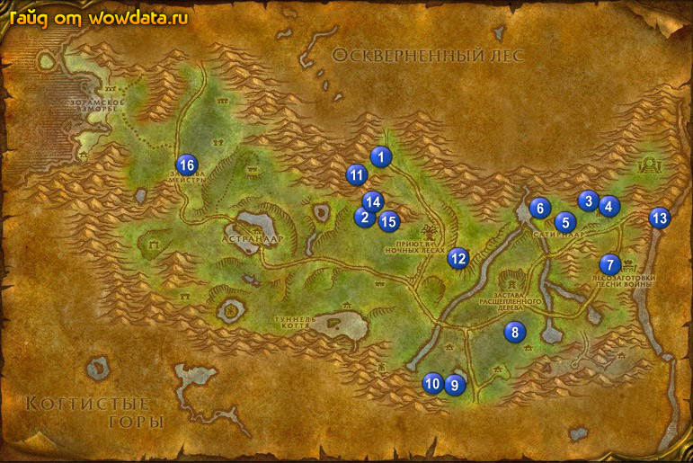

1) Сделайте Астранаар вашим домом и выйдите из гостиницы.
2) Поговорите с Воздаятельница Паланаара и начните у него <Рука помощи>.
3) Бейте Высохший древняк 1 (55, 35) ради [Деревянный ключ] для <Раэна – санитар Ясеневого леса>, потом используйте ключ на сундук 1 (54, 35).
4) Бегите закончите <Раэна – санитар Ясеневого леса> 2 (53, 46), начните <Раэна – санитар Ясеневого леса>.
5) Идите закончите <Кайнет Штиль> 3 (85, 44), начните <Чума Отрекшихся> и <Потерянная чаша>.
6) Пройдите немного на восток к Часовой Мелирия Ледяная Тень и начните <Воющая Долина>, затем рядом начните <Донесение с северного фронта> и <Пособники разрушения> у Часовой Люсьель Шепот Звезд.
7) У Воздаятель Ведаар начните <Уничтожить Легион!>.
8) Подождите Иллиана 4 (87, 43) и начните у неё <Сатиры коварны! Дриады в опасности!>.
9) Подойдите к Архитектор Немос и начните у него <Напрасные усилия>.
10) У Кривокрон (гуляющее дерево) начните <Возрождение Холма Демонического Огня>.
11) Идите делайте вторую часть квеста <Башня Алталакса> 5 (81, 48), а также собирайте деревяшки для <Напрасные усилия>, и возьмите [Чаша Элуны] 5 (81, 49) для <Потерянная чаша>.
12) Идите наверх к лагерю Ксавиан, в лагере вы найдете Анилия, закончите <Сатиры коварны! Дриады в опасности!> 6 (78, 45) и начните <Ветвь Ценариона>, севернее вы увидите сатиров и Гелтарис, убейте его.
13) Бегите отсюда к Лесозаготовки Песни Войны, и собирайте доски для <Напрасные усилия>, также убивайтеКрошшер клана Песни Войны, Ордынский лесозаготовитель, и Ордынский разведчик для <Пособники разрушения>, Надзиратель Гортак находится в маленьком здании 7 (88, 58) которое рядом с большим зданием.
14) Идите на юго-запад и бейте демонов для <Уничтожить Легион!>, также ищите кучки грязи и проращивайте деревья в них для <Возрождение Холма Демонического Огня>.
15) Идите делайте <Чума Отрекшихся> 8 (75, 71), бутылка на столе.
16) Бейте Гниющая слизь к востоку от дороги около озера, пока не выпадет сундук с лутом для <Раэна – санитар Ясеневого леса>.
17) Идите делайте <Зеркало Небес> 9 (66, 81), моб в центре озера.
18) Идите на северо-запад к 10, закончите <Донесение с северного фронта> 10 (61, 83).
19) Идите в пещеру 11 (52, 37), пройдите через проход, когда выйдите слева будет что-то типа храма или монумента, у его подножия будет стол. на котором лежит книга для <Воющая Долина>.
20) Идите на юго-восток 12 (66, 56) и освободите кристал для 1 части квеста <Башня Алталакса>.
21) Бегите обратно в Лесная Песнь 3 (85, 44) и у Кайнет Штиль закончите <Чума Отрекшихся>, игнорируйте следующую часть, а так же закончите <Потерянная чаша>.
22) Подойдите к Часовой Люсьель Шепот Звезд около первой палатки и закончите <Пособники разрушения>, затем поговорите с Часовой Мелирия Ледяная Тень и закончите <Воющая Долина>, начните <Велинда Песнь Звезд>.
23) Подойдите к Воздаятель Ведаар и закончите <Уничтожить Легион!>.
24) Найдите Иллиана и закончите у нее <Сатиры коварны! Дриады в опасности!>, начните <Убийство сатиров!>.
25) Найдите Кривокрон – гигантское дерево и закончите <Напрасные усилия> и
<Возрождение Холма Демонического Огня>.
26) Идите еще раз к Ксавиан лагерю 6 (78, 45) и бейте сатиров ради их рогов, когда наберете нужное количество возвращайтесь к Иллиана и закончите квест.
27) Пройдите в локацию 13 Азшара и откройте пункт полета (практически у входа в локацию).
28) Вернитесь по руне или летите на грифоне в Астранаар.
29) Закончите <Зеркало Небес> в последнем доме восточной части города.
30) Бегите закончите <Раэна – санитар Ясеневого леса> 14 (53, 46) и начните следующую часть, закончите его в лесу 15 (56, 49) использовав камень и начните <Раэна – санитар Ясеневого леса>, вернитесь обратно к колодцу 14 (53, 46) и закончите квест. Начните <Раэна – санитар Ясеневого леса> и возвращайтесь в город (например, умрите и воскресните на кладбище).
31) Закончите <Раэна – санитар Ясеневого леса> в гостинице и игнорируйте следующую часть, оставьте [Жезл Преображения Дартола] чтобы полиморфиться ради прикола.
32) Идите закончите <Башня Алталакса> 16 (26, 38), игнорируйте следующую часть.
33) Летите в Дарнасс и выучите скиллы на 30 лвл.
34) Пройдите в восточную часть города в Терраса Воинов, поговорите с Тин'тель Танец Клинка и закончите <Велинда Песнь Звезд>, начните <Эффекты Велинды>.
35) Прйдите на юг, в самом нижнем доме по карте на 2 этаже вы найдете Сундучок Велинды, откройте его и возьмите журнал, вернитесь к Тин'тель Танец Клинка и закончите квест, начните <Порт в Степях>. Этот квест закончите попозже в Кабестан, когда будете там.
36) Летите в Аубердин и сядьте на корабль в Гавань Менетил.